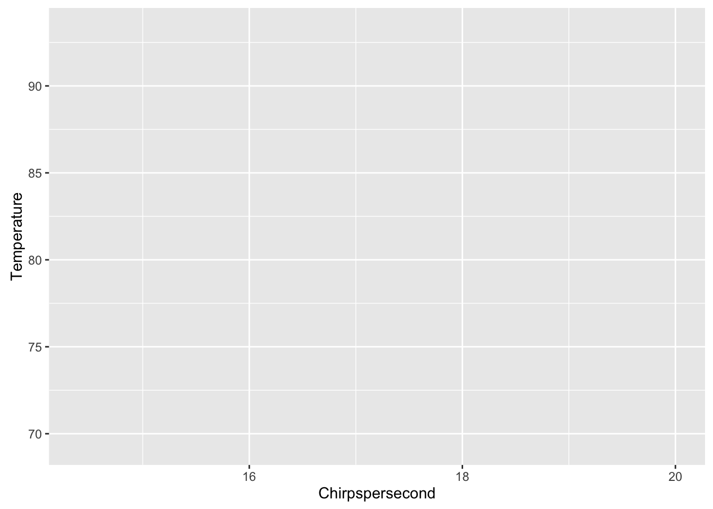

2 Interacting with Simple Data
2.1 What is RStudio?
Today, we will be working with R in RStudio. While there are other programs we can use to write R, RStudio has become the standard environment for working with R.

RStudio has four main windows: a file viewer, an interactive console, an environment viewer, and directory viewer.
Let’s focus on the interactive console first.
2.2 Coding in the console
Click in the interactive console. You’ll notice a cursor will start blinking next to the > symbol. This is called the command prompt; the computer is waiting for us to give it a command; it’s “prompting” us, and letting us know it’s ready.
Given that R was made for statistics, we should expect it to have no problems with numbers and math. Let’s try some basics!
1## [1] 11 + 5## [1] 610 + 12## [1] 22Pressing enter after each line of code runs it, and R will tell us the answer right away. This lets us interact with R quickly.
R, like other programming languages, can remember information we give it in named variables. This is called assigning variables with a value. Let’s tell R to remember some information for us.
x <- 1
y <- 5
z <- 10The < and - can be seen as an arrow pointing to the left. You can think of this as saying, “assign the value 1 to a variable named x”. If you are familiar with other programming languages, <- and = can be used interchangably in R, but the preferred way is to use <-. We can also see all the information we’ve told R to remember in the environment viewer.
We can ask R what the values of these variables are:
x## [1] 1y## [1] 5z## [1] 10We can also use these variables like so:
x + y## [1] 6x + z## [1] 11z * y## [1] 50And if we try to ask R about a variable it doesn’t know about, R will tell us that it can’t find that variable:
a## Error in eval(expr, envir, enclos): object 'a' not foundThis is neat and all, but we’re here to dig into data, so let’s get to it!
2.3 Loading in data
We are going to load in CSV files today to get data into R. R is powerful for statistics because it has a great base collection of functions, or named procedures, for common things we’d want to do with data, like reading in a CSV. R’s base way of doing this is with a function named read.csv. Like the named variables, we can get what read.csv is by referring to its name.
read.csv## function (file, header = TRUE, sep = ",", quote = "\"", dec = ".",
## fill = TRUE, comment.char = "", ...)
## read.table(file = file, header = header, sep = sep, quote = quote,
## dec = dec, fill = fill, comment.char = comment.char, ...)
## <bytecode: 0x39dbac0>
## <environment: namespace:utils>Here, we get back just what read.csv is. In order to tell R to do or run the function, we need to run:
read.csv()## Error in read.table(file = file, header = header, sep = sep, quote = quote, : argument "file" is missing, with no defaultIn order to know what file to read in, we need to give the function the location of the file:
read.csv(file = 'crickets.csv')## Chirpspersecond Temperature
## 1 20.0 88.6
## 2 16.0 71.6
## 3 19.8 93.3
## 4 18.4 84.3
## 5 17.1 80.6
## 6 15.5 75.2
## 7 14.7 69.7
## 8 17.1 82.0
## 9 15.4 69.4
## 10 16.2 83.3
## 11 15.0 79.6
## 12 17.2 82.6
## 13 16.0 80.6
## 14 17.0 83.5
## 15 14.4 76.3RStudio reminds us what different functions are named as we start typing them into console, and reminds us what additional information each of those functions may need when we type the (. It also automatically completes the function call for us with the ).
When we read in the CSV, R printed the data out to us. In order to really use the data though, we need to tell R to remember the data by assigning it to a variable. We want to name our variables so that they’re easy to remember and indicative of what information they are holding onto.
crickets <- read.csv(file = 'crickets.csv')Now, when we ask R about crickets, we get the data back!
crickets## Chirpspersecond Temperature
## 1 20.0 88.6
## 2 16.0 71.6
## 3 19.8 93.3
## 4 18.4 84.3
## 5 17.1 80.6
## 6 15.5 75.2
## 7 14.7 69.7
## 8 17.1 82.0
## 9 15.4 69.4
## 10 16.2 83.3
## 11 15.0 79.6
## 12 17.2 82.6
## 13 16.0 80.6
## 14 17.0 83.5
## 15 14.4 76.3There are many other ways to load in data from other file types. Googling “read xls to R” will give us some great answers on how to read in data as an Excel sheet. We also have a quick list of standard ways to load other common file types in the appendix.
Let’s get a quick sense of what this data is like!
2.4 Glancing at the data
Here’s a table of some quick functions we can run on the data to learn about it:
| Code | Description |
|---|---|
names(crickets) |
Column header names |
dim(crickets) |
Number of rows by number of columns |
nrow(crickets) |
Number of rows |
ncol(crickets) |
Number of columns |
str(crickets) |
Structure of data |
summary(crickets) |
Summary of the data |
View(crickets) |
View data in file viewer |
We can also look at parts of the data using []. For example, we can look at the value in the first row and column:
crickets[1, 1]## [1] 20We can look at just the rows:
crickets[1, ]## Chirpspersecond Temperature
## 1 20 88.6crickets[2, ]## Chirpspersecond Temperature
## 2 16 71.6crickets[nrow(crickets), ]## Chirpspersecond Temperature
## 15 14.4 76.3or just the columns:
crickets[, 1]## [1] 20.0 16.0 19.8 18.4 17.1 15.5 14.7 17.1 15.4 16.2 15.0 17.2 16.0 17.0
## [15] 14.4crickets[, 2]## [1] 88.6 71.6 93.3 84.3 80.6 75.2 69.7 82.0 69.4 83.3 79.6 82.6 80.6 83.5
## [15] 76.3We can use this to calculate our own means, standard deviations, and medians:
mean(crickets[, 1])
median(crickets[, 1])
sd(crickets[, 1])
mean(crickets[, 2])
median(crickets[, 2])
sd(crickets[, 2])We can also as R for the max and the min:
max(crickets[, 1])
min(crickets[, 1])
max(crickets[, 2])
min(crickets[, 2])There’s many more calculations we can run on the data, but plotting the data will help us we a better picture of it.
2.5 Visualizing the data
Base R can plot our data, but the wonderful thing about R being open-sourced is that it’s encouraged many people to expand it’s functionality by writing groups of functions, called packages. These packages are available for everyone to install and use. To plot our data, we will use an outside package, called ggplot2, which has become the standard way to plot data in R.
We can install the ggplot2 package by calling the install.packages function like this:
install.packages('ggplot2')## Installing package into '/home/travis/R/Library'
## (as 'lib' is unspecified)While the package is installing, let’s take a break!
Once the package installed, we need to tell R to load it so we can use it.
library(ggplot2)To start, we can tell ggplot what our data is:
ggplot(data = crickets)This gives us back a rather boring blank gray square. At this point, ggplot does not know what about the data to map to where. We can tell it to map Chirpspersecond as the x, and Temperature as the y like this:
ggplot(data = crickets, mapping = aes(x = Chirpspersecond, y = Temperature))
At this point, ggplot seems to know where things should go, but there’s no points. This base layer is ready with our coordinates and axis, but we would also like ggplot to map the data in the same way to a layer of markings that represent the data. Let’s try points:
ggplot(data = crickets, mapping = aes(x = Chirpspersecond, y = Temperature)) +
geom_point()
We now have points, each with it’s x mapped to Chirpspersecond and the y mapped to Temperature. We can also mapped the color of each point to the temperature like this:
ggplot(data = crickets, mapping = aes(x = Chirpspersecond, y = Temperature)) +
geom_point(mapping = aes(color = Temperature))
This gives the points colors mapped from the Temperature along a default scale. We can adjust the scale to give a sense of the temperature like this:
ggplot(data = crickets, mapping = aes(x = Chirpspersecond, y = Temperature)) +
geom_point(mapping = aes(color = Temperature)) +
scale_color_gradient(low = "orange", high = "red")
Let’s take some time to experiment with different visualizations using ggplot2. See the data visualization cheat sheet for ideas.
Once we have a plot we like, we can save our last plot to an image file very easily:
ggsave(filename = "plot.png")## Saving 7 x 5 in image